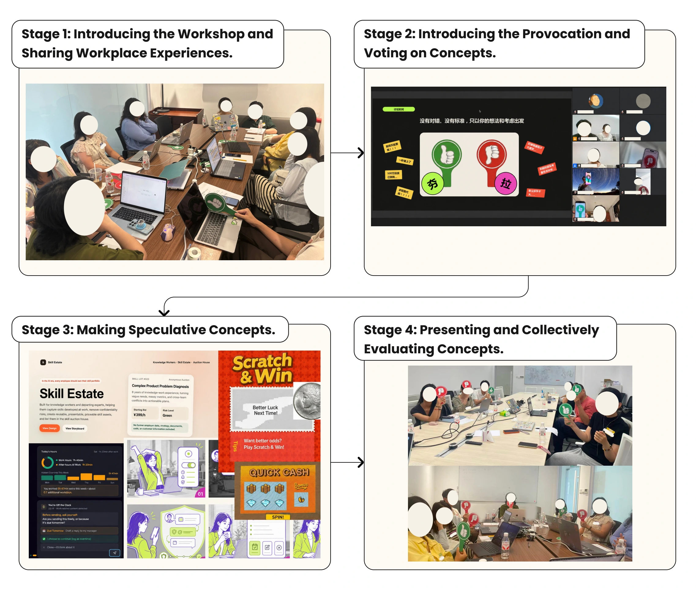

2026 / Participatory co-speculation
Knowledge Workers and Workplace GenAI
First-author project · Study completed · Manuscript under review
Workplace generative AI is often introduced with promises of greater efficiency. For knowledge workers, however, those promises can become shorter deadlines, extra work to demonstrate AI adoption, or expectations that their expertise should become a reusable organizational resource. This project asks what GenAI might be for if workers could begin with their own concerns, including those that do not align with organizational priorities.
We explored this question through three participatory co-speculation workshops with 16 knowledge workers who had experienced organization-led GenAI adoption. A deliberately provocative brief invited them to temporarily set organizational benefit aside and imagine what AI could do for them. Participants shared workplace experiences, responded to speculative examples, and made digital mockups, storyboards, and simple websites that they then presented and discussed together. They could also question or rework the brief itself.

Their concepts gave GenAI purposes that productivity-focused adoption can overlook. AI Scratch Card made workers slowly uncover generated results, putting a small pause back into cognitively demanding work. Off the Clock imagined private records of work extending beyond regular hours. Skill Estate proposed that workers retain portable libraries of their expertise and decide whether to license them. Together, these alternatives opened up questions about rest, organizational access, and who benefits when workers' knowledge becomes reusable.
Participants used Win/Lose cards to discuss what they valued in these alternatives and what troubled them. A concept could receive support because it brought a neglected concern into view or challenged the direction of AI adoption. That did not necessarily mean participants trusted it to help in practice. The votes made different judgments visible and gave us a way to follow the reasoning behind them.
Collective discussion brought the proposals back into the workplaces participants knew. A record intended to protect a worker could become another means of assessing them. A manager could ignore advice that favored the worker, or acknowledge responsibility for a problem without changing what happened next. These concerns showed why giving workers a useful tool could still leave them unable to make their interests count.
The study suggests that designing GenAI for workers involves both allowing their concerns to shape its purposes and supporting them in maintaining boundaries and contesting demands when interests diverge. Whether that support holds depends on workplace policies, access rules, and opportunities to challenge decisions. Co-speculation helped us connect alternative designs with these organizational conditions, identifying possibilities and anticipated obstacles for workplace AI design, adoption, and governance.
My contribution
As first author, I led study conception and design, participant recruitment, workshop material development, literature review, data analysis, and manuscript writing. I co-facilitated the workshops with another researcher.